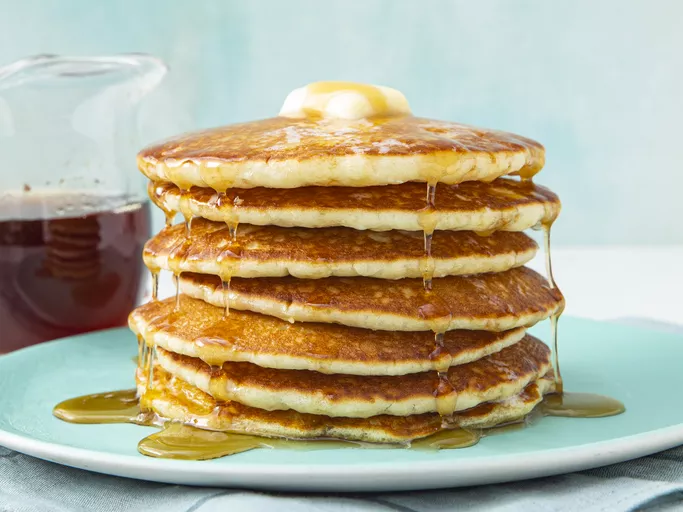

Pancake Recipe

Descripton
A very light and fluffy pancake recipe that requires fresh buttermilk, but it's the best I've ever made!
Ingredients
- 3 cups all-purpose flour
- 3 tablespoons white sugar
- 3 teaspoons baking powder
- 1 ½ teaspoons baking soda
- ¾ teaspoon salt
- 3 cups buttermilk
- ½ cup milk
- 3 eggs
- ⅓ cup butter, melted